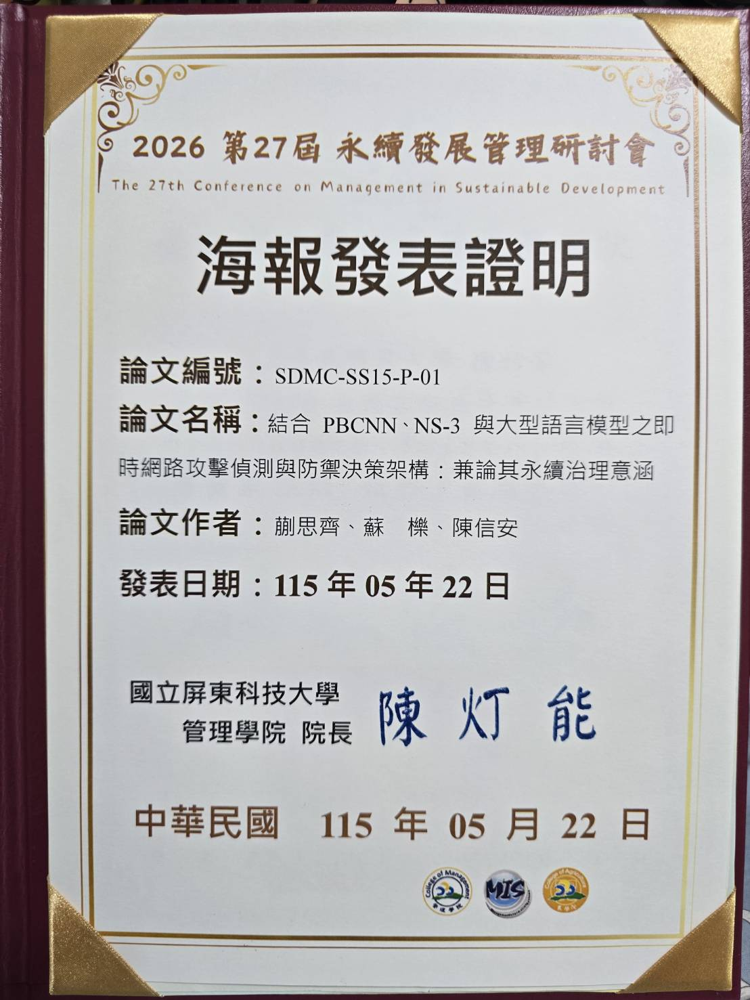

研討會・海報發表2026
2026 第 27 屆永續發展管理研討會
The 27th Conference on Management in Sustainable Development
以論文作者之一的身分參與研究成果發表。這篇結合 PBCNN、NS-3 與大型語言模型的研究，取得研討會海報發表證明。
研究發表紀錄
海報發表
論文題名
結合 PBCNN、NS-3 與大型語言模型之即時網路攻擊偵測與防禦決策架構：兼論其永續治理意涵
紀錄資訊
- 發表日期
- 發表形式
- 海報發表
- 作者身分
- 陳信安為論文作者之一
- 論文編號
- SDMC-SS15-P-01
- 頒發單位
- 國立屏東科技大學管理學院
CERTIFICATES & MILESTONES
留下這一段紀錄。
點擊證書，可在新分頁查看原圖。

海報發表證明
記錄論文題名、編號與作者，發表日期為 2026/05/22。
返回 About 活動紀錄
活動、研究與學習路上的累積。